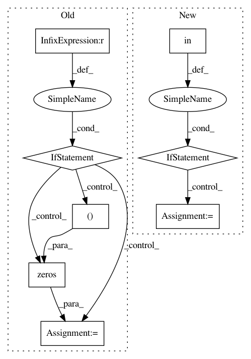

cfd242af2c65bb3925f576fb54221f5ed005d0ba,linearmodels/iv/results.py,FirstStageResults,diagnostics,#FirstStageResults#,669
Before Change
z = w * instr.ndarray
x = w * exog.ndarray
nobs = endog.shape[0]
if x.shape[1] == 0:
// No exogenous regressors
px = zeros((nobs, nobs))
else:
px = x @ pinv(x)
ez = z - px @ z
individual_results = self.individual
out_df = DataFrame(
index=["rsquared", "partial.rsquared", "f.stat", "f.pval", "f.dist"],
After Change
c = asarray(full.cov)[-nz:, -nz:]
stat = params.T @ inv(c) @ params
stat = float(stat.squeeze())
if full.cov_type in ("homoskedastic", "unadjusted"):
df_denom = full.df_resid
stat /= params.shape[0]
else:
df_denom = None
w_test = WaldTestStatistic(
stat, null="", df=params.shape[0], df_denom=df_denom
)
inner = {
In pattern: SUPERPATTERN
Frequency: 3
Non-data size: 8
Instances
Project Name: bashtage/linearmodels
Commit Name: cfd242af2c65bb3925f576fb54221f5ed005d0ba
Time: 2021-02-25
Author: kevin.k.sheppard@gmail.com
File Name: linearmodels/iv/results.py
Class Name: FirstStageResults
Method Name: diagnostics
Project Name: ContextLab/hypertools
Commit Name: 449ccc820a0558d742bc7055bc37c1690dff4496
Time: 2017-06-14
Author: andrew.heusser@gmail.com
File Name: hypertools/tools/reduce.py
Class Name:
Method Name: reduce
Project Name: ContextLab/hypertools
Commit Name: dce3b66b54fac2040e826a5a465ff58cf1295e7f
Time: 2017-06-14
Author: andrew.heusser@gmail.com
File Name: hypertools/tools/reduce.py
Class Name:
Method Name: reduce